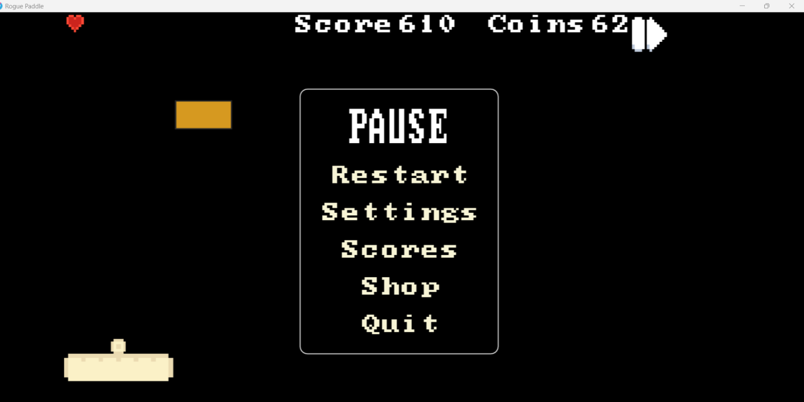

01 / The context
Build something people can play through.
Rogue Paddle is a team-built brick-breaker with progressive waves, scoring and lives, power-ups, and an upgrade shop. The capstone brought game behavior, interfaces, persistence, testing, and delivery into a shared project.
The experience includes the moments between rounds as well as the action itself: pausing, changing settings, using the shop, and restarting after a run.
02 / My contribution
The details that connect a play session.
My contribution focused on settings and audio, shop overlays and upgrade behavior, gameplay quality assurance, and bug fixes. I also contributed sprint documentation and the final handoff.
- Worked on the settings and audio controls around the core game.
- Contributed shop interactions and the behavior of upgrades.
- Tested gameplay and menu flows, investigated issues, and helped resolve defects.
- Documented progress and delivery details for the team.

03 / Engineering focus
Transitions deserve as much attention as features.
Menus, overlays, upgrades, and active gameplay all interact with the same session. Testing each screen in isolation only tells part of the story; the flow between them needs to make sense as well.
My work on the surrounding systems and gameplay QA made state changes especially important: entering a menu, returning to play, applying an upgrade, and handling the end of a run.
Lua and LÖVE2D provided the foundation for the game, while our team used an Agile workflow and Trello to organize implementation and fixes.
04 / What I took forward
Quality is a team responsibility.
Game development made the relationship between code and user experience immediate. A small state or interaction bug can interrupt the entire session.
The project strengthened how I test connected flows, communicate defects, and contribute within a shared codebase. Those habits carry into my web and automation work: follow the full journey, make failures understandable, and keep the handoff clear.